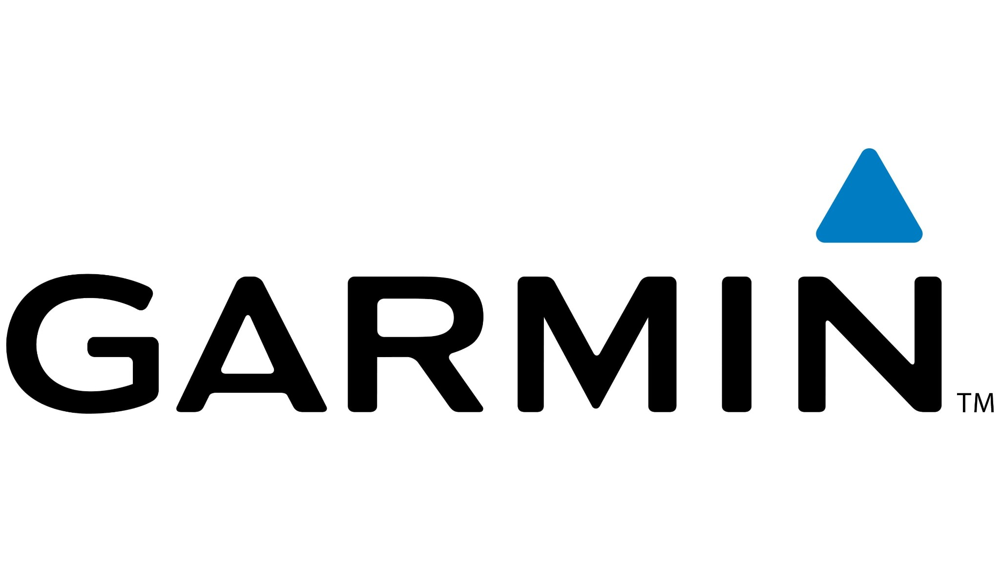
Welcome to my Digital Marketing E-Portfolio. This project critically analyses the digital marketing strategies of Garmin, a leading global brand in wearable technology, specifically focusing on its highly successful Forerunner series.
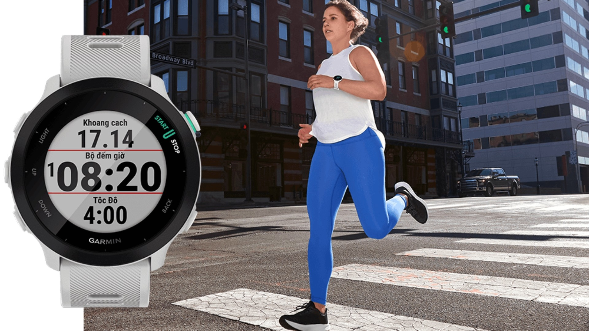
By applying academic frameworks to real-world marketing practices, this portfolio explores four key areas:
Customer engagement in the digital era is not a monolith; it exists on a spectrum. The "Ladder of Engagement," introduced by PR Smith, illustrates the different levels of customer interaction, progressing from passive observation to active collaboration (Smith, 2020; Chaffey and Ellis-Chadwick, 2019). The levels typically ascend through Ratings, Reviews, Discussions, Ideas, and finally, Collaborative Co-Creation. Moving customers up this ladder turns them into powerful brand advocates (Hollebeek, Glynn and Brodie, 2014).
Garmin, specifically through its Forerunner series targeted at runners and triathletes, brilliantly executes strategies across all levels of this ladder:
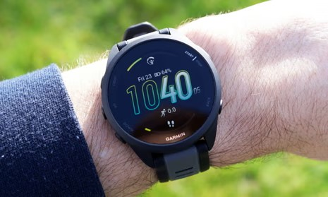
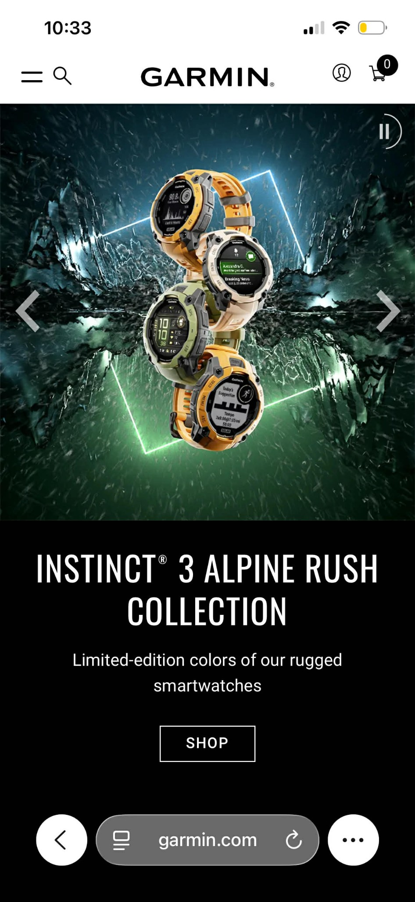
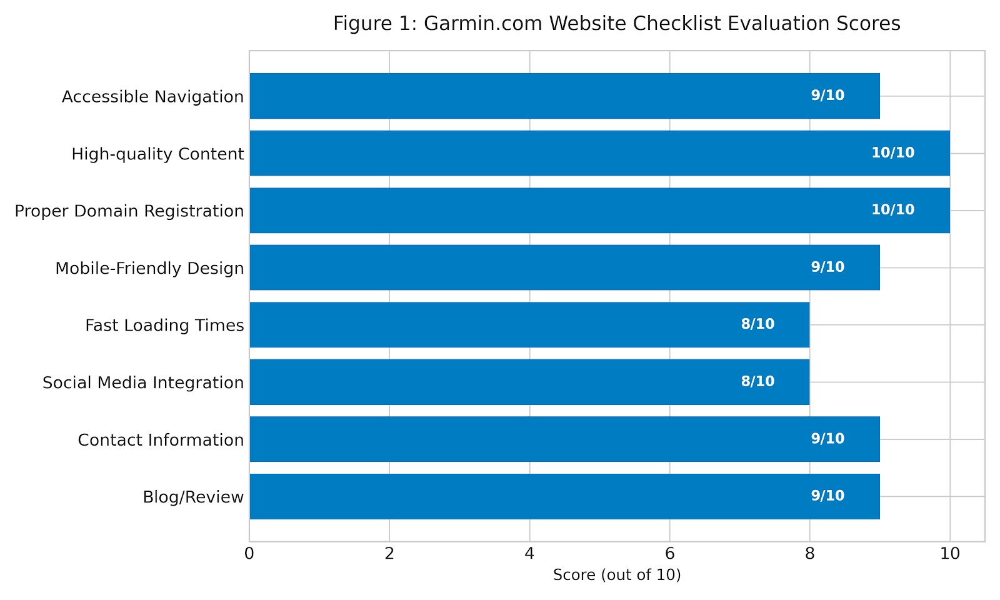
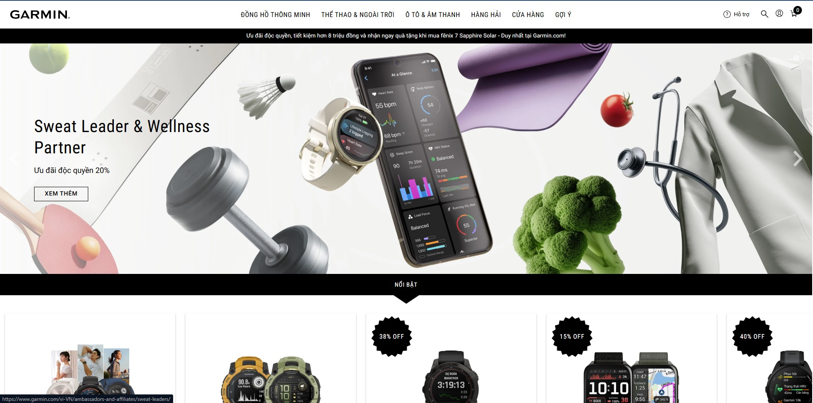
A business website must prioritize customer acquisition, conversion, and retention (Chaffey and Smith, 2017). Given the highly technical nature of smartwatches, a website checklist was created based on standard digital marketing criteria to evaluate Garmin's official e-commerce site (Garmin.com).
As illustrated in the evaluation scores above, Garmin.com scores exceptionally well across crucial digital touchpoints:
A defining trend shaping the digital marketing landscape in the 2020s is Wearable Tech Data Personalization fueling User-Generated Content (UGC).
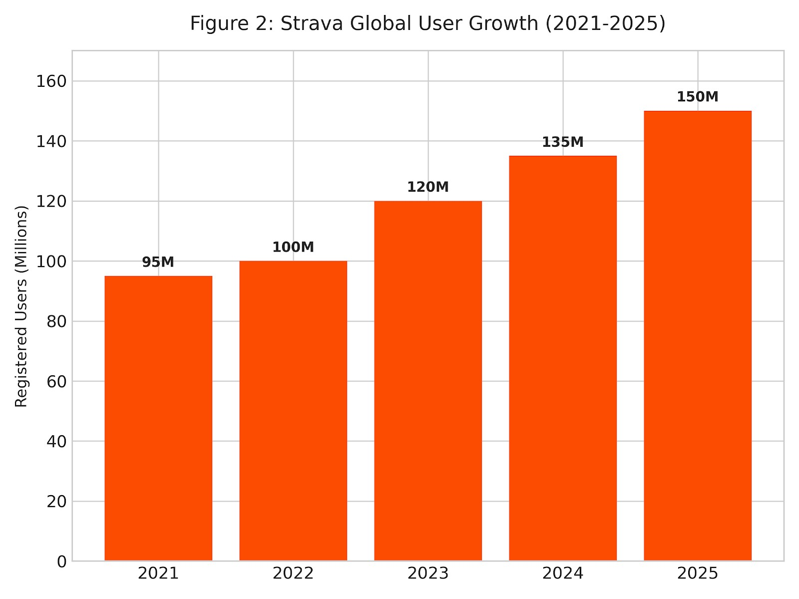
Consumers no longer purchase smartwatches merely for hardware; they buy them for personalized algorithmic insights. Modern devices collect millions of data points, which brands translate into highly personalized daily metrics. Concurrently, the desire to share personal health achievements online has skyrocketed, as evidenced by the massive user growth of fitness platforms like Strava shown in Figure 2 (Strava, 2024; Statista, 2024).
From a digital marketer's viewpoint, this trend represents a goldmine for authentic brand advocacy (MacInnis, Park and Priester, 2014). Brands like Garmin take advantage of this by transforming complex biometric data into easily digestible, highly shareable visual metrics—such as the "Body Battery," "Sleep Score," or "Daily Suggested Workouts."
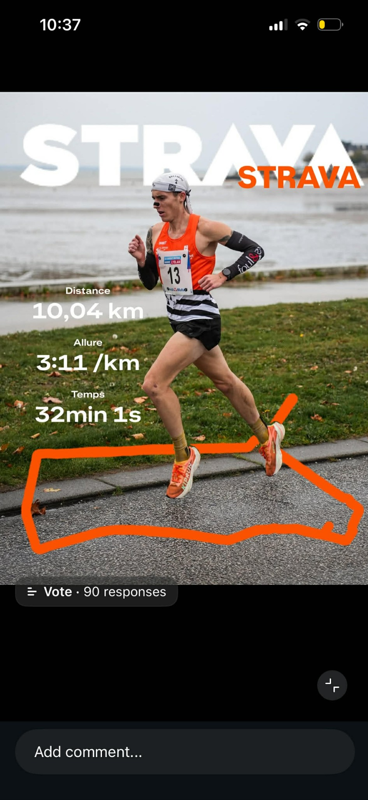
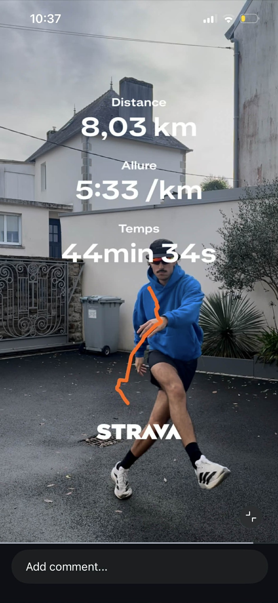
Instead of spending heavily on traditional paid media, marketers engineer shareability directly into the UI/UX of the companion apps (We Are Social & Hootsuite, 2024). When a runner achieves a new VO2 Max, the Garmin Connect app generates a sleek, branded graphic overlaying their statistics onto a personal photo. The user then proudly shares this UGC on Instagram or Strava.
This strategy capitalizes on the psychological phenomenon of social validation. Every shared graphic acts as a micro-endorsement, proving the device's accuracy and value to the user's network (Zook and Smith, 2016). For brands, taking advantage of this trend requires a seamless integration between data science (to provide accurate insights) and digital marketing (to make those insights frictionless to share).
Chaffey, D. and Ellis-Chadwick, F., 2019. Digital marketing. 7th ed. Pearson UK.
Chaffey, D. and Smith, P.R., 2017. Digital marketing excellence: planning, optimizing and integrating online marketing. 5th ed. Routledge.
Dodson, I., 2016. The digital marketing playbook. John Wiley & Sons.
Garmin Ltd., 2025. Annual Report 2024. [online] Garmin Investor Relations. Available at: https://www.garmin.com/en-US/investors/ [Accessed 25 March 2026].
Hollebeek, L.D., Glynn, M.S. and Brodie, R.J., 2014. Consumer brand engagement in social media: Conceptualization, scale development and validation. Journal of interactive marketing, 28(2), pp.149-165.
Kannan, P.K. and Li, H.A., 2017. Digital marketing: A framework, review and research agenda. International journal of research in marketing, 34(1), pp.22-45.
Kaplan, A.M. and Haenlein, M., 2010. Users of the world, unite! The challenges and opportunities of Social Media. Business horizons, 53(1), pp.59-68.
Kietzmann, J.H., Hermkens, K., McCarthy, I.P. and Silvestre, B.S., 2011. Social media? Get serious! Understanding the functional building blocks of social media. Business horizons, 54(3), pp.241-251.
Kotler, P., Kartajaya, H. and Setiawan, I., 2016. Marketing 4.0: Moving from traditional to digital. John Wiley & Sons.
Lamberton, C. and Stephen, A.T., 2016. A thematic exploration of digital, social media, and mobile marketing: Research evolution from 2000 to 2015 and an agenda for future inquiry. Journal of Marketing, 80(6), pp.146-172.
MacInnis, D.J., Park, C.W. and Priester, J.W., 2014. Handbook of brand relationships. Routledge.
Muniz Jr, A.M. and O'guinn, T.C., 2001. Brand community. Journal of consumer research, 27(4), pp.412-432.
Ryan, D., 2016. Understanding digital marketing: marketing strategies for engaging the digital generation. Kogan Page Publishers.
Smith, P.R., 2020. The Ladder of Engagement. PR Smith Marketing.
Statista, 2024. Number of connected wearable devices worldwide from 2016 to 2024. [online] Statista. Available at: https://www.statista.com/ [Accessed 25 March 2026].
Stephen, A.T., 2016. The role of digital and social media marketing in consumer behavior. Current opinion in Psychology, 10, pp.17-21.
Strava, 2024. Year in Sport Trend Report. [online] Strava Press. Available at: https://press.strava.com/ [Accessed 25 March 2026].
Tiago, M.T.P.M.B. and Veríssimo, J.M.C., 2014. Digital marketing and social media: Why bother?. Business horizons, 57(6), pp.703-708.
Tuten, T.L. and Solomon, M.R., 2017. Social media marketing. 2nd ed. Sage.
We Are Social & Hootsuite, 2024. Digital 2024: Global Overview Report. [online] DataReportal. Available at: https://datareportal.com/ [Accessed 25 March 2026].
Zook, Z. and Smith, P.R., 2016. Marketing communications: offline and online integration, engagement and analytics. Kogan Page Publishers.
3. EVALUATION OF A SOCIAL MEDIA PLATFORM
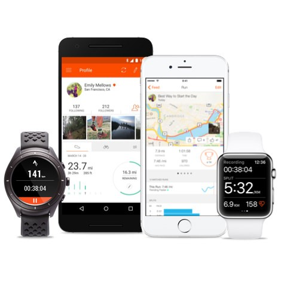
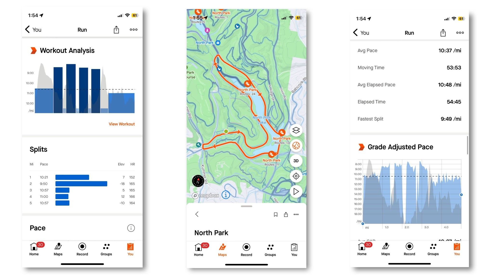
To evaluate Strava—the primary social network for Garmin users—we can apply the "Four Zones of Social Media" framework proposed by Tuten and Solomon (2017), which divides social media into Social Community, Social Publishing, Social Entertainment, and Social Commerce. According to Kaplan and Haenlein (2010), understanding these functional building blocks is crucial for modern brand strategy.